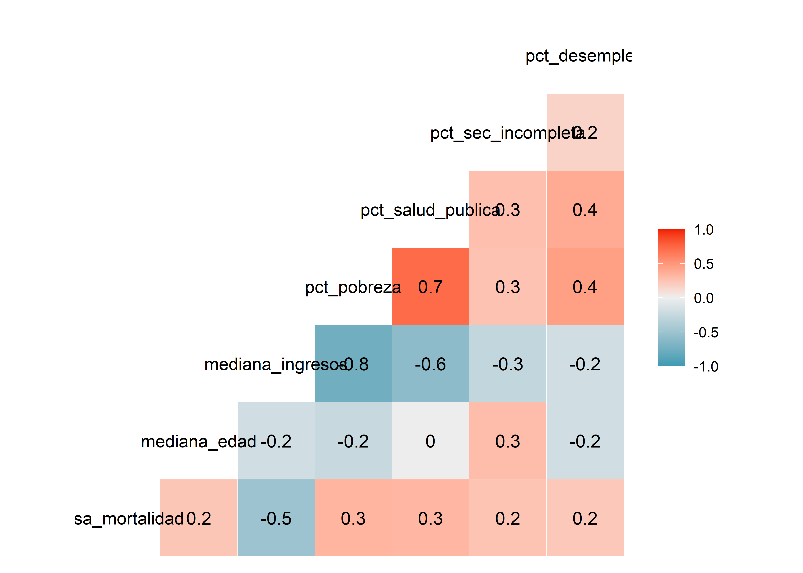

Regresión lineal múltiple
Christian Ballejo ![]()
Andrea Silva
Tamara Ricardo
Introducción
Los modelos de Regresión Lineal Múltiple (RLM) son herramientas estadísticas ampliamente utilizadas cuando la variable dependiente es continua y existen dos o más variables independientes, que pueden ser tanto continuas como categóricas. En el caso de las covariables categóricas, estas pueden ser dicotómicas, ordinales o tener múltiples niveles.
Al igual que la Regresión Lineal Simple (RLS), que permite estimar el efecto bruto de una variable independiente sobre la variable dependiente, la RLM nos permite conocer el efecto conjunto de dos o más variables independientes (\(X_1\), \(X_2\),…\(X_k\)) sobre la variable dependientea (\(Y\)). De esta manera, la RLM nos permite:
Analizar la dirección y fuerza de la asociación entre la variable dependiente y las variables independientes.
Identificar las variables independientes importantes en la predicción o explicación de la variable dependiente.
Describir la relación entre una o más variables independientes, controlando la confusión.
Detectar interacciones, es decir, cómo cambia la relación entre la variable dependiente y una variable independiente según el nivel de otra variable independiente.
El modelo estadístico de la RLS que expresa la relación entre \(X\) e \(Y\) es:
\[ Y = \beta_0 + \beta_1X_1 \]
Este modelo se representa gráficamente como una recta de ajuste en un plano bidimensional (dos dimensiones).
Por otro lado, el modelo estadístico de la RLM es:
\[ Y = \beta_0 + \beta_1X_1 + \beta_2X_2 + ...+\beta_kX_k \]
Donde \(\beta_0\), \(\beta_1\), \(\beta_2\),…,\(\beta_k\) son los parámetros de la regresión. Para cada combinación de valores de \(X_1\), \(X_2\),…\(X_k\) existe una distribución \(Y\) cuya media es una función lineal de \(X_1\), \(X_2\),…, \(X_k\).
La representación gráfica de la recta de ajuste en la regresión lineal múltiple se realiza en un espacio de dimensión \(K + 1\), donde \(K\) es el número de variables independientes. En el caso de la regresión lineal simple (RLS), la relación se puede representar fácilmente en un plano bidimensional (2D). Sin embargo, a medida que aumentamos el número de variables independientes, la representación gráfica se vuelve más compleja, ya que requerimos más dimensiones, lo que dificulta visualizar el modelo en el espacio.
En el caso puntual que el modelo tuviera 2 variables independientes, la ecuación sería:
\[ Y = \beta_0 + \beta_1 X_1 + \beta_2X_2 \]
En este caso, la relación podría representarse en un plano tridimensional (3D), donde los ejes corresponden a \(X_1\), \(X_2\) y la variable dependiente \(Y\). En este plano, la superficie de ajuste es un plano que describe la relación entre las tres variables, y la orientación de dicho plano estará determinada por los coeficientes \(\beta_1\) y \(\beta_2\).
En forma similar a la RLS, la interpretación de cada parámetro \(\beta\) de la regresión es:
\(\beta_0\): es el valor esperado de \(Y\) cuando todas las otras variables son iguales a cero.
\(\beta_1\) es la pendiente a lo largo del eje \(X_1\) y representa el cambio esperado en la respuesta por unidad de cambio en \(X_1\) a valores constantes de \(X_2\).
\(\beta_2\) es la pendiente a lo largo del eje \(X_2\) y representa el cambio esperado en la respuesta por unidad de cambio en \(X_2\) a valores constantes de \(X_1\).
Presupuestos del modelo de RLM
Independencia
Las observaciones \(Y_i\) son independientes unas de otras: el efecto de \(X_1\) sobre la respuesta media no depende de \(X_2\) y viceversa, siempre y cuando no exista interacción. Cuando existe interacción entre \(X_1\) e \(X_2\) , el efecto de \(X_1\) sobre la respuesta media de \(Y\) depende \(X_2\) y viceversa (\(X_1\) e \(X_2\) no son independientes cuando existe interacción).
Linealidad
Para cada combinación de valores de las variables independientes (\(X_1\), \(X_2\),…, \(X_k\)) el valor medio de \(Y\) es función lineal de \(X_1\), \(X_2\),…,\(X_k\).. La linealidad se define en relación a los coeficientes de la regresión, por lo tanto el modelo puede incluir términos cuadráticos e interacciones
- Modelo con interacción
\[ Y = \beta_0X_1 + \beta_2X_2 + \beta_3X_1X_2 \]
-
Modelo con términos cuadráticos
\[ Y = \beta_0 + \beta_1X_1 + \beta_2X_2 + \beta_3X_1^2 + \beta_4X_2^2 \]
Homocedasticidad
la varianza de \(Y\) para los distintos valores de \(X_1\), \(X_2\),…,\(X_k\) se mantiene constante.
Normalidad
Los valores de \(Y\) tienen una distribución normal según los valores de \(X_1\), \(X_2\), \(X_k\) , ésto nos permite realizar inferencias en relación a los parámetros del modelo.
Al igual que en la RLS la estimación de los parámetros de la regresión (coeficientes) se realiza mediante el Método de los Mínimos Cuadrados (MMC). El mismo consiste en adoptar como estimativas de los parámetros de la regresión los valores que minimicen la suma de los cuadrados de los residuos.
\[ \sum_{i=1}^{i=n}e_1^2=\sum_{i=1}^{i=n}(Y_i-\hat{Y_i})^2=\sum_{i=n}^{i=n}(Y_i-(\hat{\beta}_0+\hat{\beta}_1X_1+\dots+\hat{\beta}_kX_k))^2 \]
Interpretación del modelo
Comenzaremos aprendiendo cómo interpretar un modelo de regresión lineal múltiple (RLM) antes de abordar su construcción. Para ilustrarlo, observemos en detalle la salida de R para un modelo de RLM en el que modelamos la variable V23, en función de las variables V10, V11, V12, V14, V15, V17, V18 y V24.
Call:
lm(formula = V23 ~ ., data = data)
Residuals:
Min 1Q Median 3Q Max
-2.45958 -0.57136 0.05354 0.57868 2.25036
Coefficients:
Estimate Std. Error t value Pr(>|t|)
(Intercept) 0.09504 0.09502 1.000 0.3199
V10 -0.05189 0.09725 -0.534 0.5950
V11 -0.11508 0.09711 -1.185 0.2391
V12 -0.08137 0.09151 -0.889 0.3763
V14 -0.16411 0.09738 -1.685 0.0954 .
V15 -0.03240 0.10283 -0.315 0.7534
V17 -0.04053 0.09040 -0.448 0.6550
V18 0.14425 0.09456 1.525 0.1306
V24 -0.04953 0.08940 -0.554 0.5809
---
Signif. codes: 0 '***' 0.001 '**' 0.01 '*' 0.05 '.' 0.1 ' ' 1
Residual standard error: 0.9081 on 91 degrees of freedom
Multiple R-squared: 0.09027, Adjusted R-squared: 0.0103
F-statistic: 1.129 on 8 and 91 DF, p-value: 0.3518En la salida obtenida, encontramos varios términos clave para interpretar:
Estimate: muestra los coeficientes estimados (\(\beta\)) para el intercepto (\(\beta_0\)) y para cada una de las variables explicativas (\(\beta_i\)).Std. Error: el error estándar de cada coeficiente estimado \(\beta\).t-value: los valores del test \(t\) para cada coeficiente, que evalúan si los coeficientes son significativamente diferentes de cero.Pr(>|t|): los valores \(p\) asociados a los test \(t\) para cada coeficiente.Residual standard error: el error estándar de los residuales.Multiple R-squared: el coeficiente de determinación \(R^2\) múltiple, que indica qué proporción de la variabilidad de la variable dependiente es explicada por el modelo.Adjusted R-squared: el coeficiente de determinación ajustado, que penaliza por la inclusión de variables que no mejoran el modelo.F-statistic: el resultado del test \(F\) global, que evalúa la significancia del modelo en su conjunto, junto con su valor \(p\).
Test F parcial
En un modelo de regresión, la estimación de los coeficientes se realiza partiendo de una muestra, lo que implica que diferentes muestras pueden generar distintos valores de los parámetros. El test F parcial evalúa la siguiente hipótesis:
\[ H_0 = \beta_1 = \beta_2 = ... \beta_n = 0 \\H_1 = \exists\beta_i \neq 0 \]
Donde \(H_0\) indica que todos los coeficientes de las variables independientes son cero, y \(H_1\) implica que al menos uno de los coeficientes es diferente de cero. Este test evalúa la contribución de cada variable al modelo, es decir, si la inclusión de esa variable mejora significativamente la explicación de la variabilidad de \(Y\). En modelos de regresión lineales generalizados (GLM), el test de Wald cumple esta misma función, mientras que en los modelos de regresión lineales múltiplos, el test \(F\) parcial cumple el mismo rol.
Varianza residual
Al igual que en la regresión lineal simpley el análisis de la varianza (ANOVA), podemos descomponer la variabilidad de la variable dependiente \(Y\) en dos componentes:
Variabilidad explicada por el modelo.
Variabilidad no explicada por el modelo, atribuida a factores aleatorios.
Matemáticamente, esto se expresa como:
\[ Variabilidad \ total = Variabilidad \ regresión \ + \ Variabilidad \ residual \]
De manera equivalente, la suma de cuadrados totales (SCT) se descompone en la suma de cuadrados de la regresión (SCR) y la suma de cuadrados residuales (SCE):
\[ \sum (y_i-\bar{y})^2 = \sum (\hat{y}-\bar{y})^2 + \sum (y_i -\hat{y}_i)^2 \\ SCT = SCR + SCE \]
A continuación, mostramos cómo estos términos se distribuyen entre los grados de libertad y se obtienen los cuadrados medios correspondientes:
| Grados de libertad | CM | |
|---|---|---|
| SCT | n-1 | CMT = SCT/n-1 |
| SCR | k-1 | CMR = SCR/k-1 |
| SCE | n-k-1 | CME = SCE/n-k-1 |
Test F global
El test \(F\) global compara el modelo de regresión ajustado con el modelo nulo (sin variables independientes) y evalúa el efecto conjunto de todas las variables independientes. Su fórmula es:
\[ F = CMR/CME \\ gl = (k -1, n - k - 1) \]
Coeficiente de determinación
Al igual de lo que aprendimos en la RLS la bondad de ajuste del modelo de RLM se valora con el coeficiente de determinación (\(R^2\)), que nos dice qué proporción de la variabilidad de \(Y\) es explicada por los coeficientes de la regresión del modelo en estudio. Su valor se calcula como:
\[ R^2 = \frac{SCT-SCE}{SCT}=\frac{SCR}{SCT} \]
Sin embargo, al agregar más variables al modelo, \(R^2\) siempre mejora, incluso si la nueva variable no mejora sustancialmente el modelo. Este fenómeno se debe a que \(R^2\) solo refleja la proporción de variabilidad explicada, pero no penaliza la inclusión de variables que no aportan al modelo.
Por esta razón, se utiliza el \(R^2\) ajustado, que corrige el \(R^2\) penalizando la inclusión de variables que no aportan significativamente:
\[ R^2_a = 1 - \bigg [ \frac{n-1}{n-(k+1)}\bigg]\frac{SCE}{SCT}=1-\bigg[\frac{n-1}{n-(k+1)}\bigg](1-R^2) \]
Como el término \(1 - R^2\) es constante y \(n\) es mayor que \(k\), a medida que agregamos variables, el cociente entre paréntesis crece, lo que hace que la penalización por agregar variables no significativas también aumente. Esto hace que el \(R^2\) ajustado sea una medida más fiable de la calidad del modelo.
Cuando tenemos que elegir el mejor modelo será necesario utilizar distintos criterios para compararlos y basar nuestra decisión en elegir el modelo que mejor explique la variación de \(Y\) con el menor número de variables independientes, el modelo más simple y efectivo, también llamado el modelo más parsimonioso.
Variables dummy
En los modelos de regresión, podemos incluir tanto variables cuantitativas como variables categóricas. Las variables categóricas pueden ser dicotómicas (por ejemplo, sexo: femenino/masculino; hábito de fumar: sí/no) o tener más de dos categorías (por ejemplo, grupo sanguíneo, religión, color de ojos).
Para modelar las variables categóricas, cada categoría se transforma en una variable dicotómica (binaria), con un número de categorías menos uno. Es decir, para una variable con \(n\) categorías, se crearán \(n-1\) variables dummy, donde \(1\) indica la presencia de esa categoría y \(0\) indica su ausencia. En estos casos, se selecciona como grupo basal (o grupo de referencia) la categoría con el valor más bajo.
Ejemplo para variable independiente dicotómica
Supongamos que tenemos una variable cualitativa dicotómica, como “Hábito de Fumar”, que toma los valores 1 (si fuma) y 0 (si no fuma). Si ajustamos un modelo con esta variable, la ecuación sería:
\[ Y = \beta_0+\beta_1F_1 \]
Donde:
\(Y\) es la variable dependiente.
\(\beta_0\) es el intercepto (valor basal de \(Y\) cuando el individuo no fuma).
\(\beta_1\) es el coeficiente asociado al hábito de fumar, que indica el cambio en \(Y\) cuando el individuo fuma (es decir, la diferencia entre el grupo de fumadores y no fumadores).
Ejemplo para variable independiente con múltiples categorías
Ahora, consideremos una variable “Región”, que tiene tres categorías: Noreste (NE), Norte (N) y Centro Oeste (CO). Para modelarla como variables dummy, la transformamos en dos variables: \(Re_1\) y \(Re_2\), ya que hay \(n-1 = 3-1 = 2\) categorías dummy.
La transformación de las categorías sería:
| Región | RE1 | RE2 |
|---|---|---|
| NE (basal) | 0 | 0 |
| N | 1 | 0 |
| CO | 0 | 1 |
En este caso:
\(Re_1 = 1\) si vive en el Norte, \(Re_1 = 0\) si vive en otra región.
\(Re_2 = 1\) si vive en el Centro Oeste, \(Re_2 = 0\) si vive en otra región.
Ahora imaginemos el modelo de regresión entre \(Y\) y la variable “región” (supongamos que \(Y\) es la Tasa de Mortalidad Infantil):
\[ Y = \beta_0+\beta_1Re_1 + \beta_2Re_2 \]
Para interpretar el modelo:
- Si el individuo vive en la región Norte (\(Re_1 = 1\) y \(Re_2 = 0\)), la ecuación se reduce a:
\[ Y=\beta_0+\beta_1Re_1 \]
- Si el individuo vive en la región Centro Oeste (\(Re_1 = 0\) y \(Re_2 = 1\)), la ecuación sería:
\[ Y=\beta_0+\beta_2Re_2 \]
- Si el individuo vive en la región Noreste (grupo basal, \(Re_1 = 0\) y \(Re_2 = 0\)), la ecuación se reduce a:
\[ Y=\beta_0 \]
En este contexto, \(\beta_1\) y \(\beta_2\) nos estarán indicando cuánto se modifica la TMI según consideremos la región Norte o Centro Oeste. El coeficiente \(\beta_0\) es el valor basal medio de la TMI considerada en la región Noreste
Las variables dummy o indicadoras no tienen un significado por sí solas, ya que su interpretación depende de cómo se comparan con el grupo basal. Es importante que todas las categorías de la variable cualitativa estén representadas en el modelo, y la inclusión de estas variables debe ser contrastada en bloque, incluso si algunos de los tests \(F\) parciales para una categoría no son significativos.
Además, al agregar una variable dummy al modelo, esta incrementa los grados de libertad de la regresión en función de la cantidad de categorías de la variable. Por ejemplo, si una variable tiene \(n\) categorías, se agregarán \(n-1\) variables dummy, cada una con su respectivo grado de libertad.
Cuando trabajamos en R, el lenguaje se encarga de construir las variables dummy automáticamente siempre que su estructura sea factor. Los tipos de datos factor tienen una estructura de niveles donde el primero de ellos es el de referencia. Para modificar el nivel de referencia podemos utilizar las funciones relevel() de R base o fct_relevel() de tidyverse.
Estimación y predicción en modelos de regresión
La regresión es una herramienta clave en los análisis tanto explicativos como predictivos, y se utiliza de las siguientes maneras:
Con fines explicativos: Este uso tiene como objetivo obtener estimaciones precisas sobre variables de interés para realizar inferencias o cuantificar relaciones entre variables, controlando por otras. Aquí se busca entender cómo los cambios en las variables independientes afectan a la variable dependiente.
Con fines predictivos: La regresión también se utiliza para predecir el comportamiento de la variable dependiente (\(Y\)) basándose en los valores de las variables independientes (\(X_k\)) observados en la muestra. Sin embargo, la predicción solo debe hacerse si existe una correlación lineal adecuada y si el modelo ajustado es adecuado para los datos.
Consideraciones para la predicción:
No utilizar el modelo si no hay correlación lineal: Si no existe una correlación lineal significativa entre \(Y\) y las \(X_k\), la predicción no será válida. En estos casos, la mejor predicción es la media muestral de \(Y\).
No extrapolar más allá de los valores muestrales conocidos: Las predicciones fuera del rango de los datos observados pueden ser inexactas.
Datos actualizados: La predicción debe basarse en datos recientes y relevantes.
No predecir para poblaciones distintas: El modelo debe ser usado solo para hacer predicciones dentro de la población de la cual se obtuvieron los datos muestrales.
Relación no necesariamente causal para modelos predictivos: Mientras que para modelos explicativos la relación entre \(X\) y \(Y\) debe ser causal (en términos temporales y lógicos), para la predicción basta con que exista una correlación.
Lineamientos la selección del modelo de regresión
Dada una variable dependiente \(Y\) y un conjunto de \(k\) variables independientes \(X_1\), \(X_2\), \(X_3\)….,\(X_k\) , nuestro interés es definir el mejor conjunto de \(p\) predictores (\(p \leq k\)) y el correspondiente modelo de regresión para describir la relación entre \(Y\) y las variables \(X\).
Para ello, debemos seguir los siguientes pasos:
- Especificar el conjunto de variables potencialmente predictivas/explicativas
- Evaluar colinealidad
- Especificar un criterio estadístico para la elección de las variables
- Especificar una estrategia para seleccionar modelos
- Conducir el análisis específico
- Evaluar los presupuestos del modelo
- Evaluar la confiabilidad del modelo escogido
Identificación de variables potencialmente predictivas/explicativas
El primer paso para construir un modelo de regresión es seleccionar un conjunto adecuado de variables predictivas. Esto implica identificar aquellas variables que mejor expliquen la variable dependiente sin que ninguna de ellas sea combinación lineal de las restantes.
El primer paso a seguir es identificar las relaciones entre la variable dependiente y las variables independientes de forma bivariada utilizando tests de correlación y gráficos de dispersión para las variables explicativas continuas y tests de asociación para las variables explicativas categóricas.
Colinealidad
Un problema frecuente en los modelos de RLM es el de la multicolinealidad, que ocurre cuando las variables independientes están relacionadas entre sí en forma lineal. Si bien no implica una violación de las hipótesis o presupuestos del modelo, puede ocasionar problemas en la inferencia, ya que:
Aumenta las varianzas y covarianzas de los estimadores.
Los errores de las estimaciones serán grandes.
Tiende a producir estimadores con valores absolutos grandes.
Los coeficientes de cada variable independiente difieren notablemente de los que se obtendrían por RLS.
No se puede identificar de forma precisa el efecto individual de cada variable colineal sobre la variable respuesta.
A la hora de plantear modelos de RLM conviene estudiar previamente la existencia de casi-colinealidad (la colinealidad exacta no es necesario estudiarla previamente, ya que todos los algoritmos la detectan, de hecho no pueden acabar la estimación). Como medida de la misma hay varios estadísticos propuestos:
Podemos examinar la matriz de correlación
Realizar gráficos de dispersión entre las variables explicativas/predictivas
Cálculo del factor de inflación de la varianza (VIF por sus siglas en inglés):
\[ VIF = \frac{1}{1-R^2_i} \]
Una regla empírica, citada por Kleinbaum et al. (1988), consiste en considerar que existen problemas de colinealidad si algún VIF es superior a 10. Por otro lado Kim (2019) considera que un VIF entre 5 y 10 indican la presencia de colinealidad. En caso de detectar colinealidad entre dos predictores, existen dos posibles soluciones:
Excluir uno de los predictores problemáticos intentando conservar el que, a juicio del investigador, está influyendo realmente en la variable respuesta
Combinar las variables colineales en un único predictor, aunque con el riesgo de perder su interpretación
Selección de variables
Generalmente incluiremos en el modelo aquellas variables que resultaron significativas en el análisis bivariado y otras que, aun cuando no resultaran significativas, decidamos mantener por cuestiones teóricas, porque se necesitan establecer predicciones para distintas categorías de dicha variable, etc.
El proceso de selección de variables puede realizarse en forma manual o automática, siendo este último desaconsejado por la mayoría de los autores, ya que en el proceso de ajuste de un modelo no sólo se involucran criterios estadísticos sino también conceptuales. Existen tres estrategias para realizar el proceso , basadas en el valor del test \(F\) parcial:
Método jerárquico o forward: se basa en el criterio del investigador que introduce predictores determinados en un orden específico en relación al marco teórico. Comienza con un modelo nulo que solo contiene el intercepto (\(\beta_0\)) y agrega secuencialmente una variable a la vez, eligiendo la que proporciona el mayor beneficio en términos de ajuste del modelo. Este proceso continúa hasta que agregar más variables no mejore significativamente el ajuste del modelo.
Método de entrada forzada o backward: es el método inverso al anterior. Se introducen todos los predictores simultáneamente y, en cada paso, elimina la variable que tenga el menor impacto en el ajuste del modelo. Este proceso continúa hasta que eliminar más variables no mejore significativamente el ajuste del modelo. Permite evaluar cada variable en presencia de las otras.
Método paso a paso o stepwise: emplea criterios matemáticos para decidir qué predictores contribuyen significativamente al modelo y en qué orden se introducen. Se trata de una combinación de la selección forward y backward. Comienza con un modelo nulo, pero tras cada nueva incorporación se realiza un test de extracción de predictores no útiles como en el backward. Presenta la ventaja de que si a medida que se añaden predictores, alguno de los ya presentes deja de contribuir al modelo, se elimina.
Selección de modelos
Hasta ahora hemos desarrollado algunos criterios que se pueden utilizar para comparar modelos como \(R^2\), \(R^2\) ajustado y \(F\) global. Como hemos mencionado anteriormente el uso de \(R^2\) como único criterio de selección tiene varias desventajas: tiende a sobreestimar, al adicionar variables siempre aumenta, por lo que si fuera el único criterio elegiría modelos con el mayor número de variables, no tiene en consideración la relación entre parámetros y tamaño muestral.
Para modelos anidados, podemos realizar una comparación entre ambos modelos mediante un ANOVA. Existen otros criterios como el Criterio de Información de Akaike (AIC), el Criterio de Información Bayesiano (BIC), etc. Tanto el BIC como el AIC, son funciones del logaritmo de la verosimilitud y un término de penalidad basado en el número de parámetros del modelo.
Recuerden que frente a \(p\) variables independientes existen \(2^p\) posibles modelos. No necesariamente el modelo con mayor número de variables es el mejor. Debemos priorizar siempre el principio de parsimonia (el modelo más simple que mejor explique). El tamaño de la muestra también es importante, algunos autores recomiendan que el número de observaciones sea como mínimo entre 10 y 20 veces el número de predictores del modelo.
Validación y diagnóstico del modelo
Utilizaremos el análisis de los residuales para realizar los contrastes a posteriori de las hipótesis del modelo. Recordemos que los residuos o residuales se definen como la diferencia entre el valor observado y el valor predicho por el modelo.
\[ y-\hat{y}=e~(residuo~ o ~error~ residual) \]
El planteamiento habitual es considerar que, como dijimos inicialmente, los valores de \(Y\) tienen una distribución normal según los valores de \(X_1\), \(X_2\),… \(X_k\)., entonces, los residuos también tendrán una distribución normal. Los residuos tienen unidades de medida y, por tanto no se puede determinar si es grande o pequeño a simple vista. Para solucionar este problema se define el residuo estandarizado como el cociente entre el residuo y su desvío estandar. Se considera que un residuo tiene un valor alto, y por lo tanto puede influir negativamente en el análisis, si su residuo estandarizado es mayor a 3 en valor absoluto. También se trabaja con los residuos tipificados o con los residuos estudentizados.
Normalidad
El análisis de normalidad de los residuos lo realizaremos gráficamente (Histograma y gráfico de probabilidad normal) y analíticamente (Contraste de Kolmogorov-Smirnov) o similar.
Homocedasticidad y linealidad
La hipótesis de homocedasticidad establece que la variabilidad de los residuos es independiente de las variables explicativas. En general, la variabilidad de los residuos estará en función de las variables explicativas, pero como las variables explicativas están fuertemente correlacionadas con la variable dependiente, bastara con examinar el gráfico de valores pronosticados versus residuos (a veces residuos al cuadrado).
Comprobamos la hipótesis de homogeneidad de las varianzas gráficamente representando los residuos tipificados frente a los valores predichos por el modelo. El análisis de este gráfico puede revelar una posible violación de la hipótesis de homocedasticidad, por ejemplo si detectamos que el tamaño de los residuos aumenta o disminuye de forma sistemática para algunos valores ajustados de la variable \(Y\), si observamos que el gráfico muestra forma de embudo. Si por el contrario dicho gráfico no muestra patrón alguno, entonces no podemos rechazar la hipótesis de igualdad de varianzas.
Valores de influencia (leverage)
Se considera que una observación es influyente a priori si su inclusión en el análisis modifica sustancialmente el sentido del mismo. Una observación puede ser influyente si es un outlier respecto a alguna de las variables explicativas. Para detectar estos problemas se utiliza la medida de Leverage:
\[ l(i)=\frac{1}{n}\bigg(1+\frac{(x_i-\bar{x})^2}{S^2_x}\bigg) \]
Este estadístico mide la distancia de un punto a la media de la distribución. Valores cercanos a 2/\(n\) indican casos que pueden influir negativamente en la estimación del modelo introduciendo un fuerte sesgo en el valor de los estimadores.
Distancia de Cook
Es una medida de cómo influye la observación \(i\)-ésima sobre la estimación de \(\beta\) al ser retirada del conjunto de datos. Una distancia de Cook grande significa que una observación tiene un peso grande en la estimación de \(\beta\). Son puntos influyentes las observaciones que presenten
\[ D_i=\frac{4}{n-p-2} \]
Independencia de residuos
La hipótesis de independencia de los residuos la realizaremos mediante el contraste de Durbin-Watson.
Ejemplo práctico en R
En el documento Introducción al modelado estadístico vimos como generar en R una fórmula para un modelo lineal simple:
\[ variable \ dependiente \; \sim variable \ independiente \]
Para generar fórmulas que contengan más de una variable independiente o predictora (necesario para que sea una regresión lineal múltiple) debemos agregarlas mediante el símbolo \(+\)
\[ variable \ dependiente \ \sim var\_indepen\_1 \ + \ var\_indepen\_2 \ + \; \dots \ + \ var\_indepen\_n \]
Si luego de la ~ incluímos un punto como notación de “todas”, estamos creando un modelo saturado con todas las variables incluidas dentro del dataframe:
lm(y ~., data = datos)Esto es útil cuando tenemos muchas posibles variables explicativas y queremos conocer cuáles tienen una correlación significativa.
También se puede descartar alguna o algunas variables explicativas en particular basado en la misma estructura, mediante el símbolo \(-\)
lm(y ~ .-x2, data = datos)En la línea anterior, incluimos dentro del modelo a todas las variables de data menos x2.
Usaremos para el ejemplo el dataset “cancer_USA.txt”, que contiene información sobre la tasa de mortalidad por cáncer cada 100.000 habitantes de distintos condados de Estados Unidos.
Lectura de datos y visualización de estructura
Para comenzar, cargamos los paquetes de R necesarios para el análisis:
A continuación leemos los datos y realizamos una exploración rápida
Rows: 213
Columns: 10
$ condado <chr> "Belknap County", "Carroll County", "Cheshire Count…
$ estado <chr> "New Hampshire", "New Hampshire", "New Hampshire", …
$ tasa_mortalidad <dbl> 182.6, 168.8, 162.8, 181.6, 155.0, 163.2, 173.1, 17…
$ mediana_edad <dbl> 46.1, 50.3, 42.0, 48.1, 41.9, 40.1, 42.6, 43.5, 37.…
$ mediana_edad_cat <chr> "45+ años", "45+ años", "36-39 años", "45+ años", "…
$ mediana_ingresos <dbl> 59831, 57556, 56008, 42491, 56353, 71233, 62429, 79…
$ pct_pobreza <dbl> 10.0, 10.7, 11.8, 14.9, 11.6, 8.7, 9.5, 6.1, 11.8, …
$ pct_salud_publica <dbl> 16.8, 13.4, 12.7, 22.5, 14.0, 12.7, 13.1, 9.0, 12.4…
$ pct_sec_incompleta <dbl> 15.4, 14.8, 6.1, 13.2, 6.6, 12.9, 10.9, 13.5, 6.1, …
$ pct_desempleo <dbl> 5.3, 5.8, 6.1, 6.9, 5.0, 5.9, 5.2, 5.6, 6.5, 5.8, 1…La base de datos tiene 100 observaciones y 9 variables. La variable dependiente es tasa_mortalidad y hay 3 variables independientes categóricas y 6 variables independientes numéricas o continuas.
Análisis de variables potencialmente explicativas
Analizaremos la relación entre las variables explicativas numéricas y la variable dependiente mediante un correlograma con el paquete GGally:
datos |>
# selecciono variables numéricas
select(where(is.numeric)) |>
# correlograma
ggcorr(label = T)
Como habíamos observado en el capítulo sobre covarianza y correlación, la tasa_mortalidad tiene correlación negativa moderada con mediana_ingresos, también que existe una correlación negativa fuerte entre pct_pobreza y mediana_ingresos y moderada con pct_salud_publica.
Estrategia de construcción del modelo
Al momento de seleccionar las variables independientes que formarán parte del modelo, una de las herramientas más utilizadas es el Criterio de Información de Akaike (AIC) que ajusta mediante máxima verosimilitud. Al penalizar la complejidad excesiva, el AIC ayuda a prevenir el sobreajuste y favorece la inclusión de variables relevantes buscando el modelo equilibrado que describa adecuadamente la relación y tenga el mínimo AIC. Podemos consultar el AIC de un modelo en R mediante la función AIC().
Como vimos anteriormente, la selección de variables se puede hacer mediante métodos forward, backward o stepwise. La función step() de R base permite encontrar de forma automática el mejor modelo basado en AIC utilizando cualquiera de las 3 variantes del método paso a paso. Por otro lado, la función drop1() de R base nos permite realizar un proceso backward manual, eligiendo que variable quitar del modelo en cada caso según su contribución al AIC. Siempre es oportuno aclarar que estos últimos métodos se basan en cálculos matemático/estadísticos que no tienen en cuenta criterios conceptuales epidemiológicos que surjan del marco teórico, por lo que exigen un control especial del analista.
el lenguaje R ofrece una variedad de funciones para abordar y facilitar la tarea de seleccionar el mejor modelo de regresión (más parsimonioso). Como existe correlación fuerte entre mediana_ingresos, pct_pobreza y pct_salud_publica sólo usaremos la que presente mayor correlación con tasa_mortalidad.
# Modelo saturado
mod_full <- lm(tasa_mortalidad ~ mediana_ingresos + mediana_edad +
pct_sec_incompleta + pct_desempleo + estado,
data = datos)
# Mediana ingresos
mod1 <- lm(tasa_mortalidad ~ mediana_ingresos, data = datos)
# Mediana edad
mod2 <- lm(tasa_mortalidad ~ mediana_edad, data = datos)
# Secundaria incompleta
mod3 <- lm(tasa_mortalidad ~ pct_sec_incompleta, data = datos)
# Desempleo
mod4 <- lm(tasa_mortalidad ~ pct_desempleo, data = datos)
# Estado
mod5 <- lm(tasa_mortalidad ~ estado, data = datos)Mediante summary() observamos sus resultados:
# Modelo saturado
summary(mod_full)
Call:
lm(formula = tasa_mortalidad ~ mediana_ingresos + mediana_edad +
pct_sec_incompleta + pct_desempleo + estado, data = datos)
Residuals:
Min 1Q Median 3Q Max
-31.475 -7.254 1.161 7.192 29.261
Coefficients:
Estimate Std. Error t value Pr(>|t|)
(Intercept) 1.488e+02 1.487e+01 10.006 < 2e-16 ***
mediana_ingresos -3.810e-04 8.165e-05 -4.666 5.62e-06 ***
mediana_edad 5.005e-01 2.588e-01 1.934 0.05453 .
pct_sec_incompleta 1.652e-01 1.945e-01 0.849 0.39681
pct_desempleo 1.643e+00 5.781e-01 2.842 0.00494 **
estadoMaine 1.462e+01 5.662e+00 2.582 0.01054 *
estadoMassachusetts 6.389e+00 5.344e+00 1.196 0.23328
estadoNew Hampshire 1.166e+01 5.963e+00 1.955 0.05198 .
estadoNew Jersey 1.020e+01 5.010e+00 2.036 0.04302 *
estadoNew York 7.909e+00 4.706e+00 1.680 0.09443 .
estadoPennsylvania 9.905e+00 4.867e+00 2.035 0.04315 *
estadoRhode Island 5.131e+00 7.359e+00 0.697 0.48646
estadoVermont 1.325e+01 5.814e+00 2.278 0.02377 *
---
Signif. codes: 0 '***' 0.001 '**' 0.01 '*' 0.05 '.' 0.1 ' ' 1
Residual standard error: 11.93 on 200 degrees of freedom
Multiple R-squared: 0.3373, Adjusted R-squared: 0.2975
F-statistic: 8.483 on 12 and 200 DF, p-value: 6.303e-13# Modelos simples
summary(mod1)
Call:
lm(formula = tasa_mortalidad ~ mediana_ingresos, data = datos)
Residuals:
Min 1Q Median 3Q Max
-33.040 -8.210 1.093 7.637 35.932
Coefficients:
Estimate Std. Error t value Pr(>|t|)
(Intercept) 2.014e+02 3.521e+00 57.200 < 2e-16 ***
mediana_ingresos -5.200e-04 6.133e-05 -8.479 3.94e-15 ***
---
Signif. codes: 0 '***' 0.001 '**' 0.01 '*' 0.05 '.' 0.1 ' ' 1
Residual standard error: 12.32 on 211 degrees of freedom
Multiple R-squared: 0.2542, Adjusted R-squared: 0.2506
F-statistic: 71.9 on 1 and 211 DF, p-value: 3.938e-15summary(mod2)
Call:
lm(formula = tasa_mortalidad ~ mediana_edad, data = datos)
Residuals:
Min 1Q Median 3Q Max
-31.870 -9.631 0.512 9.539 46.770
Coefficients:
Estimate Std. Error t value Pr(>|t|)
(Intercept) 134.7306 10.9761 12.275 < 2e-16 ***
mediana_edad 0.8961 0.2600 3.447 0.000684 ***
---
Signif. codes: 0 '***' 0.001 '**' 0.01 '*' 0.05 '.' 0.1 ' ' 1
Residual standard error: 13.88 on 211 degrees of freedom
Multiple R-squared: 0.05332, Adjusted R-squared: 0.04883
F-statistic: 11.88 on 1 and 211 DF, p-value: 0.0006835summary(mod3)
Call:
lm(formula = tasa_mortalidad ~ pct_sec_incompleta, data = datos)
Residuals:
Min 1Q Median 3Q Max
-33.903 -9.319 1.485 9.185 41.404
Coefficients:
Estimate Std. Error t value Pr(>|t|)
(Intercept) 162.9089 2.8037 58.106 < 2e-16 ***
pct_sec_incompleta 0.7202 0.1997 3.607 0.000387 ***
---
Signif. codes: 0 '***' 0.001 '**' 0.01 '*' 0.05 '.' 0.1 ' ' 1
Residual standard error: 13.84 on 211 degrees of freedom
Multiple R-squared: 0.05808, Adjusted R-squared: 0.05362
F-statistic: 13.01 on 1 and 211 DF, p-value: 0.0003867summary(mod4)
Call:
lm(formula = tasa_mortalidad ~ pct_desempleo, data = datos)
Residuals:
Min 1Q Median 3Q Max
-35.594 -8.948 0.508 9.029 40.157
Coefficients:
Estimate Std. Error t value Pr(>|t|)
(Intercept) 158.9950 4.1741 38.091 < 2e-16 ***
pct_desempleo 1.7906 0.5418 3.305 0.00112 **
---
Signif. codes: 0 '***' 0.001 '**' 0.01 '*' 0.05 '.' 0.1 ' ' 1
Residual standard error: 13.91 on 211 degrees of freedom
Multiple R-squared: 0.04922, Adjusted R-squared: 0.04471
F-statistic: 10.92 on 1 and 211 DF, p-value: 0.001117summary(mod5)
Call:
lm(formula = tasa_mortalidad ~ estado, data = datos)
Residuals:
Min 1Q Median 3Q Max
-32.840 -9.533 0.360 9.100 36.641
Coefficients:
Estimate Std. Error t value Pr(>|t|)
(Intercept) 157.713 4.785 32.960 < 2e-16 ***
estadoMaine 25.438 5.860 4.341 2.24e-05 ***
estadoMassachusetts 7.087 5.998 1.182 0.238741
estadoNew Hampshire 13.167 6.420 2.051 0.041533 *
estadoNew Jersey 10.921 5.623 1.942 0.053491 .
estadoNew York 13.928 5.084 2.739 0.006700 **
estadoPennsylvania 17.347 5.075 3.418 0.000762 ***
estadoRhode Island 8.263 8.288 0.997 0.319968
estadoVermont 18.559 5.998 3.094 0.002251 **
---
Signif. codes: 0 '***' 0.001 '**' 0.01 '*' 0.05 '.' 0.1 ' ' 1
Residual standard error: 13.53 on 204 degrees of freedom
Multiple R-squared: 0.1297, Adjusted R-squared: 0.09555
F-statistic: 3.8 on 8 and 204 DF, p-value: 0.0003514En los resúmenes observamos que todos los coeficientes de las variables involucradas son significativas y que los valores mostrados tienen forma de lista, es decir no son tablas “ordenadas”, por lo que muchas veces cuando trabajamos con numerosas variables, se hace difícil la comparación de resultados.
Comparación de modelos
El comando compare_performance() del paquete performance permite comparar de manera sencilla entre modelos anidados:
compare_performance(mod_full,
mod1, mod2, mod3, mod4, mod5,
metrics = "common")# Comparison of Model Performance Indices
Name | Model | AIC (weights) | BIC (weights) | R2 | R2 (adj.) | RMSE
-------------------------------------------------------------------------------
mod_full | lm | 1675.0 (0.830) | 1722.1 (<.001) | 0.337 | 0.298 | 11.557
mod1 | lm | 1678.2 (0.170) | 1688.3 (>.999) | 0.254 | 0.251 | 12.261
mod2 | lm | 1729.0 (<.001) | 1739.1 (<.001) | 0.053 | 0.049 | 13.814
mod3 | lm | 1727.9 (<.001) | 1738.0 (<.001) | 0.058 | 0.054 | 13.779
mod4 | lm | 1729.9 (<.001) | 1740.0 (<.001) | 0.049 | 0.045 | 13.844
mod5 | lm | 1725.1 (<.001) | 1758.7 (<.001) | 0.130 | 0.096 | 13.245Las métricas comunes extraídas de los objetos de regresión, presentadas en una tabla, son:
AIC: Criterio de información de AkaikeBIC: Criterio de información bayesianoR2: Coeficiente de determinación \(R^2\)R2 (adj.): Coeficiente de determinación ajustadoRMSE:Error cuadrático medio
También podemos ordenar los modelos de mejor a peor con el argumento rank = TRUE:
compare_performance(mod_full,
mod1, mod2, mod3, mod4, mod5,
metrics = "common",
rank = TRUE)# Comparison of Model Performance Indices
Name | Model | R2 | R2 (adj.) | RMSE | AIC weights | BIC weights | Performance-Score
---------------------------------------------------------------------------------------------
mod_full | lm | 0.337 | 0.298 | 11.557 | 0.830 | 4.58e-08 | 80.00%
mod1 | lm | 0.254 | 0.251 | 12.261 | 0.170 | 1.000 | 68.44%
mod5 | lm | 0.130 | 0.096 | 13.245 | 1.12e-11 | 5.15e-16 | 14.85%
mod3 | lm | 0.058 | 0.054 | 13.779 | 2.71e-12 | 1.60e-11 | 1.89%
mod2 | lm | 0.053 | 0.049 | 13.814 | 1.59e-12 | 9.36e-12 | 0.87%
mod4 | lm | 0.049 | 0.045 | 13.844 | 1.00e-12 | 5.90e-12 | 1.18e-10%Podemos ver que el modelo saturado tiene un menor AIC y performance global que los modelos univariados.
Colinealidad
Hay varias maneras de detectar la presencia de colinealidad entre variables independientes:
Antes de ajustar el modelo, al comparar los coeficientes de correlación.
Una vez ajustado el modelo, si tenemos un \(R^2\) alto y muchas variables independientes que no son estadísticamente significativas.
Cuando hemos intuido que tenemos multicolinealidad y queremos comprobar, el paquete performance nos ofrece la función check_collinearity() que implementa el método de factor de inflación de la varianza (VIF):
check_collinearity(mod_full)# Check for Multicollinearity
Low Correlation
Term VIF VIF 95% CI Increased SE Tolerance Tolerance 95% CI
mediana_ingresos 1.89 [1.60, 2.31] 1.38 0.53 [0.43, 0.62]
mediana_edad 1.34 [1.19, 1.63] 1.16 0.75 [0.61, 0.84]
pct_sec_incompleta 1.28 [1.14, 1.56] 1.13 0.78 [0.64, 0.88]
pct_desempleo 1.55 [1.34, 1.88] 1.24 0.65 [0.53, 0.75]
estado 2.52 [2.09, 3.12] 1.59 0.40 [0.32, 0.48]Los resultados del ejemplo muestra VIF de entre 1.28 y 2.52 (no hay colinealidad). Recordemos que el umbral de detección parte de valores cercanos a 5 y un \(VIF \geq 10\) indicaría que el modelo de regresión lineal presenta un grado de multicolinealidad preocupante.
Análisis de residuales
Como vimos para la regresión lineal simple, podemos analizar gráficamente los residuales con la función check_model() del paquete performance:
check_model(mod_full)
Por otra parte, también tenemos las funciones de análisis para los supuestos (independencia, linealidad, normalidad, homocedasticidad).
-
Independencia: El paquete
lmtestpermite evaluar independencia según estadístico de Durbin-Watson.
dwtest(mod_full)
Durbin-Watson test
data: mod_full
DW = 2.1769, p-value = 0.7772
alternative hypothesis: true autocorrelation is greater than 0-
Linealidad: El paquete
lmtestimplementa el Ramsey’s RESET bajo la funciónresettest()
resettest(mod_full)
RESET test
data: mod_full
RESET = 0.66971, df1 = 2, df2 = 198, p-value = 0.513-
Normalidad: El paquete
nortestpermite chequear normalidad mediante test de Lilliefors.
lillie.test(mod_full$residuals)
Lilliefors (Kolmogorov-Smirnov) normality test
data: mod_full$residuals
D = 0.060065, p-value = 0.05954-
Homocedasticidad: El paquete
performancepermite chequear homocedasticidad con el test de Breush-Pagan.
check_heteroscedasticity(mod_full)Warning: Heteroscedasticity (non-constant error variance) detected (p = 0.012).Finalmente presentamos un paquete interesante para validar supuestos de modelos lineales denominado gvlma(Pena y Slate 2019). Su función, de mismo nombre gvlma(), implementa un procedimiento global sobre vector residual estandarizado para probar los cuatro supuestos del modelo lineal.
Si el procedimiento global indica una violación de al menos uno de los supuestos, los componentes se pueden utilizar para obtener información sobre qué supuestos se han violado.
gvlma(mod_full)
Call:
lm(formula = tasa_mortalidad ~ mediana_ingresos + mediana_edad +
pct_sec_incompleta + pct_desempleo + estado, data = datos)
Coefficients:
(Intercept) mediana_ingresos mediana_edad
148.784543 -0.000381 0.500486
pct_sec_incompleta pct_desempleo estadoMaine
0.165173 1.643031 14.617808
estadoMassachusetts estadoNew Hampshire estadoNew Jersey
6.388818 11.657941 10.203316
estadoNew York estadoPennsylvania estadoRhode Island
7.908722 9.905042 5.131109
estadoVermont
13.245742
ASSESSMENT OF THE LINEAR MODEL ASSUMPTIONS
USING THE GLOBAL TEST ON 4 DEGREES-OF-FREEDOM:
Level of Significance = 0.05
Call:
gvlma(x = mod_full)
Value p-value Decision
Global Stat 2.3043 0.6800 Assumptions acceptable.
Skewness 0.9587 0.3275 Assumptions acceptable.
Kurtosis 0.0572 0.8110 Assumptions acceptable.
Link Function 0.4246 0.5147 Assumptions acceptable.
Heteroscedasticity 0.8639 0.3527 Assumptions acceptable.Resumen del mejor modelo elegido
summary(mod_full)
Call:
lm(formula = tasa_mortalidad ~ mediana_ingresos + mediana_edad +
pct_sec_incompleta + pct_desempleo + estado, data = datos)
Residuals:
Min 1Q Median 3Q Max
-31.475 -7.254 1.161 7.192 29.261
Coefficients:
Estimate Std. Error t value Pr(>|t|)
(Intercept) 1.488e+02 1.487e+01 10.006 < 2e-16 ***
mediana_ingresos -3.810e-04 8.165e-05 -4.666 5.62e-06 ***
mediana_edad 5.005e-01 2.588e-01 1.934 0.05453 .
pct_sec_incompleta 1.652e-01 1.945e-01 0.849 0.39681
pct_desempleo 1.643e+00 5.781e-01 2.842 0.00494 **
estadoMaine 1.462e+01 5.662e+00 2.582 0.01054 *
estadoMassachusetts 6.389e+00 5.344e+00 1.196 0.23328
estadoNew Hampshire 1.166e+01 5.963e+00 1.955 0.05198 .
estadoNew Jersey 1.020e+01 5.010e+00 2.036 0.04302 *
estadoNew York 7.909e+00 4.706e+00 1.680 0.09443 .
estadoPennsylvania 9.905e+00 4.867e+00 2.035 0.04315 *
estadoRhode Island 5.131e+00 7.359e+00 0.697 0.48646
estadoVermont 1.325e+01 5.814e+00 2.278 0.02377 *
---
Signif. codes: 0 '***' 0.001 '**' 0.01 '*' 0.05 '.' 0.1 ' ' 1
Residual standard error: 11.93 on 200 degrees of freedom
Multiple R-squared: 0.3373, Adjusted R-squared: 0.2975
F-statistic: 8.483 on 12 and 200 DF, p-value: 6.303e-13El modelo mod_full es capaz de explicar el 29,8% de la variabilidad observada en la tasa de mortalidad por cáncer en estos condados (\(R^2_{ajustado} = 0,2975\)). El test \(F\) global muestra que es significativo (\(p< 0,001\)).
Los coeficientes se pueden interpretar como:
Mediana de ingresos: Cada aumento de una unidad en la mediana de ingresos reduce la tasa de mortalidad en 0,0004 unidades.
Mediana de edad: Cuando aumento una unidad en la mediana de edad incrementa la tasa de mortalidad en 0,5 unidades.
Porcentaje de población con secundaria incompleta: Cada aumento de una unidad en este porcentaje incrementa la tasa de mortalidad en 0,17 unidades, pero esta relación no es significativa.
Porcentaje de desempleo: Cada aumento de una unidad en el desempleo incrementa la tasa de mortalidad en 1.64 unidades.
Estados: Las tasas de mortalidad varían entre los estados, con algunos efectos significativos, como en Maine, New Jersey, Pennsylvania y Vermont, todos con tasas de mortalidad más altas que el estado de referencia. Es decir, la recta de regresión para cada estado tendrá un intercepto diferente.
Funciones para modelado automático
El uso de la función step() se enmarca en los procedimientos automáticos y puede ser forward, backward o mixto. La sintaxis básica de la función es:
donde:
-
object: es el modelo inicial de regresión lineal (nulo o saturado). -
direction: es la dirección que indicamos. Puede ser"forward","backward"o"both"(predeterminado, si no se define).
Generalmente conviene partir del modelo saturado y utilizar la dirección por defecto, donde se usan ambas direcciones.
modelo_step <- step(mod_full, direction = "both")Start: AIC=1068.56
tasa_mortalidad ~ mediana_ingresos + mediana_edad + pct_sec_incompleta +
pct_desempleo + estado
Df Sum of Sq RSS AIC
- estado 8 1470.71 29922 1063.3
- pct_sec_incompleta 1 102.58 28554 1067.3
<none> 28452 1068.6
- mediana_edad 1 532.09 28984 1070.5
- pct_desempleo 1 1149.28 29601 1075.0
- mediana_ingresos 1 3096.96 31549 1088.6
Step: AIC=1063.3
tasa_mortalidad ~ mediana_ingresos + mediana_edad + pct_sec_incompleta +
pct_desempleo
Df Sum of Sq RSS AIC
- pct_sec_incompleta 1 79.5 30002 1061.9
<none> 29922 1063.3
- mediana_edad 1 1033.9 30956 1068.5
- pct_desempleo 1 1036.6 30959 1068.5
+ estado 8 1470.7 28452 1068.6
- mediana_ingresos 1 6922.4 36845 1105.6
Step: AIC=1061.86
tasa_mortalidad ~ mediana_ingresos + mediana_edad + pct_desempleo
Df Sum of Sq RSS AIC
<none> 30002 1061.9
+ pct_sec_incompleta 1 79.5 29922 1063.3
+ estado 8 1447.7 28554 1067.3
- pct_desempleo 1 1176.8 31179 1068.1
- mediana_edad 1 1302.7 31305 1068.9
- mediana_ingresos 1 7528.4 37530 1107.5Observamos que el proceso automático nos indica que debemos eliminar las variables explicativas pct_sec_incompleta y estado.
summary(modelo_step)
Call:
lm(formula = tasa_mortalidad ~ mediana_ingresos + mediana_edad +
pct_desempleo, data = datos)
Residuals:
Min 1Q Median 3Q Max
-31.570 -7.621 1.269 7.564 32.218
Coefficients:
Estimate Std. Error t value Pr(>|t|)
(Intercept) 1.574e+02 1.271e+01 12.388 < 2e-16 ***
mediana_ingresos -4.517e-04 6.237e-05 -7.242 8.34e-12 ***
mediana_edad 7.065e-01 2.345e-01 3.013 0.00291 **
pct_desempleo 1.397e+00 4.881e-01 2.863 0.00462 **
---
Signif. codes: 0 '***' 0.001 '**' 0.01 '*' 0.05 '.' 0.1 ' ' 1
Residual standard error: 11.98 on 209 degrees of freedom
Multiple R-squared: 0.3012, Adjusted R-squared: 0.2912
F-statistic: 30.03 on 3 and 209 DF, p-value: 3.488e-16Si bien en el ejemplo mostramos como usar el método stepwise automático para la selección de variables, no se recomienda su uso ya que está basado únicamente en criterios matemáticos y no en la relevancia en el mundo real.
Además, cuenta con las siguientes limitaciones:
Sensibilidad a la selección de variables
Propensión al sobreajuste
Violación de supuestos estadísticos
Inclusión de variables irrelevantes
Para evitar estos inconvenientes, es recomendable usar métodos alternativos de selección de variables tales como:
Selección manual de variables, según su relevancia teórica y conocimiento experto del tema.
Selección de variables por AIC o BIC (Criterio de Información Bayesiano).
-
Regularización por regresión LASSO (Least Absolute Shrinkage and Selection Operator), que penaliza los coeficientes de las variables menos importantes, favoreciendo modelos más simples y generalizables. Para conocer más sobre este método pueden entrar al siguiente enlace:
-
Árboles de decisión (random forest y gradient boosting), herramientas de aprendizaje automático que permiten manejar automáticamente la selección de variables con menor probabilidad de sobreajuste. Para conocer más sobre este método pueden entrar al siguiente enlace:
Estos dos últimos métodos escapan al alcance del curso. Sin embargo, invitamos a quienes tengan interés a explorar las múltiples posibilidades que ofrecen, en particular al momento de analizar datasets grandes y con múltiples variables explicativas.
Referencias
De Irala, Jokin, Miguel Ángel Martínez-González, y Francisco Guillén Grima. 2001a. «¿Qué es una variable de confusión?» Medicina Clínica 117 (10): 377-85. https://doi.org/10.1016/S0025-7753(01)72121-5.
———. 2001b. «¿Qué es una variable modificadora del efecto?» Medicina Clínica 117 (8): 297-302. https://doi.org/10.1016/S0025-7753(01)72092-1.
Gordis, Leon. 2017. Epidemiologia. Thieme Revinter Publicações LTDA.
Kim, Jong Hae. 2019. «Multicollinearity and Misleading Statistical Results». Korean Journal of Anesthesiology 72 (6): 558-69. https://doi.org/10.4097/kja.19087.
Kleinbaum, David G, Lawrence L Kupper, Keith E Muller, y Azhar Nizam. 1988. Applied regression analysis and other multivariable methods. Vol. 601. Duxbury press Belmont, CA.
Lüdecke, Daniel, Mattan S. Ben-Shachar, Indrajeet Patil, Brenton M. Wiernik, Etienne Bacher, Rémi Thériault, y Dominique Makowski. 2022. «easystats: Framework for Easy Statistical Modeling, Visualization, and Reporting». https://doi.org/10.32614/CRAN.package.easystats.
MacMahon, B. 1972. «Concepts of multiple factors». Multiple factors in the causation of environmentally induced disease. Academic Press, New York.
Pena, Edsel A., y Elizabeth H. Slate. 2019. «gvlma: Global Validation of Linear Models Assumptions». https://CRAN.R-project.org/package=gvlma.
R Core Team. 2025. «R: A Language and Environment for Statistical Computing». https://www.R-project.org/.
Schloerke, Barret, Di Cook, Joseph Larmarange, Francois Briatte, Moritz Marbach, Edwin Thoen, Amos Elberg, y Jason Crowley. 2024. «GGally: Extension to ’ggplot2’». https://CRAN.R-project.org/package=GGally.
Wickham, Hadley, Mara Averick, Jennifer Bryan, Winston Chang, Lucy D’Agostino McGowan, Romain François, Garrett Grolemund, et al. 2019. «Welcome to the tidyverse» 4: 1686. https://doi.org/10.21105/joss.01686.
Zeileis, Achim, y Torsten Hothorn. 2002. «Diagnostic Checking in Regression Relationships» 2. https://CRAN.R-project.org/doc/Rnews/.